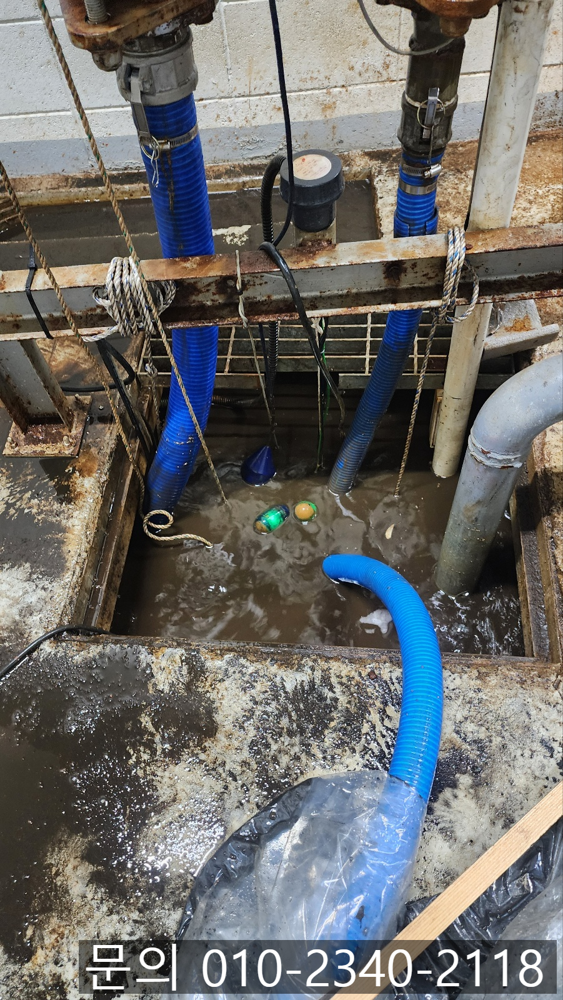
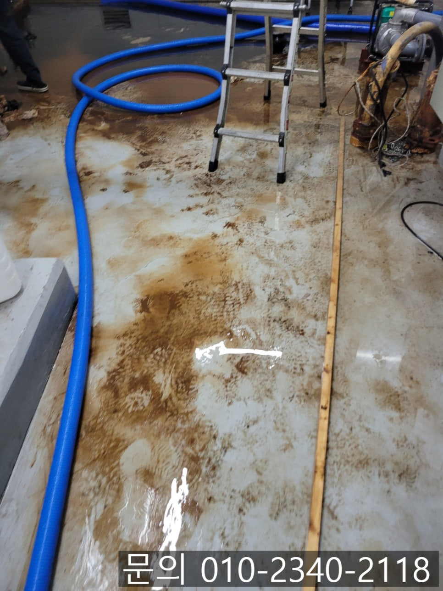
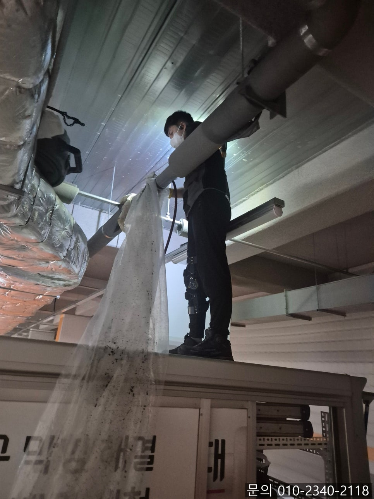
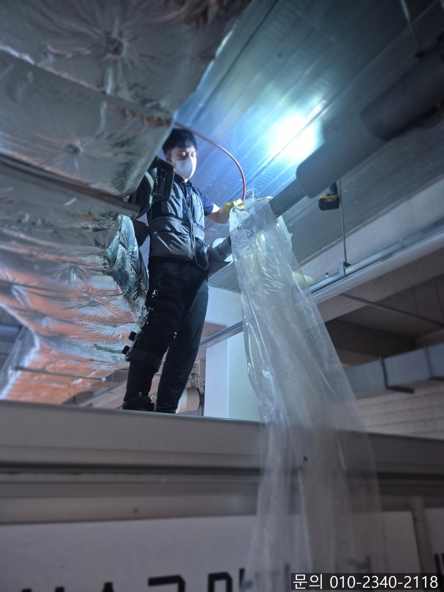
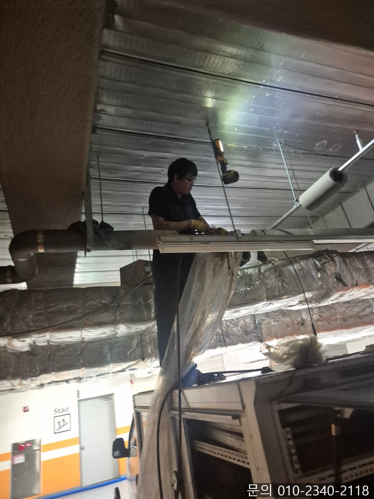
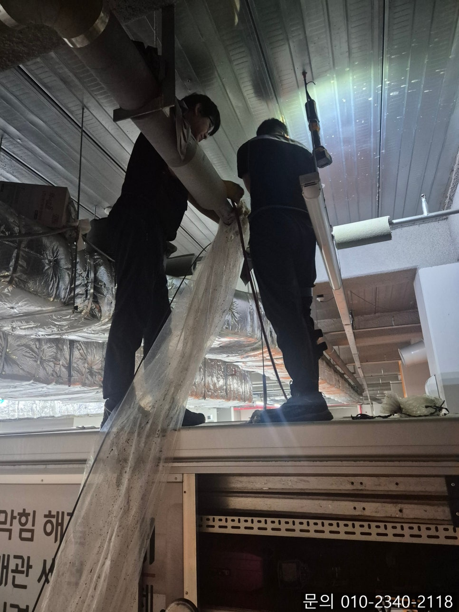

🏠 우만동 하수구 막힘 수원시 인계동 건물 지하 강관 배관 역류 고압세척 전문 업체
수원 우만동 하수구막힘 전문 시공 후기

📋 작업 개요
- 위치: 수원 우만동, 우만동, 수원
- 서비스 유형: 하수구막힘, 배관막힘, 역류해결, 배관청소, 고압세척
- 작업 일시: 2025. 6. 25. 9:00
- 업체명: 하수구수사대 (010-5615-2118)
🔍 문제 상황
안녕하세요.
우만동 하수구 막힘, 수원시 인계동 건물 지하 강관 배관 역류 고압세척 전문 업체 하수구 다큐입니다.
건물의 설비 시스템 중 펌프실은 중요한 시설 중 하나입니다.
특히 건물 지하에 위치하고 있는 펌프실은 건물 전반의 급, 배수, 오수 처리에 중요한 역할을 담당하며, 문제가 생겼을 때 빠르게 대처하지 않으면 큰 피해로 이어질 수 있습니다.
최근에 수원시 인계동 건물 지하 강관 배관 역류 고압세척 전문 업체 하수구 다큐가 다녀온 현장은 다소 복잡한 사례였는데요.
건물 지하 펌프실에서 오수가 역류하는 상태였고, 확인 결과 모터 작동 이상과 함께 강관 배관 내부의 막힘이 주요 원인이었습니다.
단순한 배수 문제로 시작된 일이었지만, 배관 내부를 확인 한 결과 상황은 훨씬 심각했는데요.

🔎 원인 분석
💡 전문가 진단: 정밀 진단 장비를 사용하여 슬러지의 고착 여부를 판명하고 타격/세척 작업을 실시했습니다.
현장에서 직접 찍어온 사진을 보면서 설명해 드릴게요.
우만동 하수구 막힘으로 고객님께 연락을 받고, 주소를 전달받아 현장으로 달려가 보니 역류로 인해 바닥이 엉망인 상태였습니다.
건물 지하 펌프실에서는 오수를 일정 수위 이상이 되면 자동으로 배출하는 장치가 설치되어 있는데요.
어떤 이유였는지 배수펌프가 작동되지 않고, 역류 현상이 발생하면서 바닥이 흥건하게 젖어있는 상태였습니다.
이런 경우 배관 어딘가에서 막힘이 발생했기 때문에 배출되지 못하고 역류가 발생한 것으로 예상되어 점검을 시작했습니다.
다른 현장과 다르게 우만동 하수구 막힘 현장의 경우 강관 배관으로 되어 있었어요.
강관 배관의 경우 내구성과 강도가 좋다 보니 상하수도, 소방설비 등 다양한 현장에서 많이 사용되고 있는데요.
강관 배관의 경우 내부가 습하거나 물과 접촉이 잦을 경우 시간이 지날수록 녹이 슬고 부식되어 배관 내부가 좁아지면서 유속이 저하되거나 막힘이 발생할 수 있는 단점이 있습니다.

🔧 작업 과정
문제 구간을 찾기 쉽지 않았는데요.
수원시 인계동 건물 지하 강관 배관 역류 고압세척 전문 업체 하수구 다큐는 역류의 원인을 결국 찾아내는데 성공했습니다.
그라인더로 배관을 절단해 보니 예상했던 대로 엄청난 양의 이물질을 확인할 수 있었습니다.
앞서 강관 배관의 단점을 말씀해드렸던 것처럼 배관 내부에 물이 닿으면서 녹이 슬어, 녹가루와 각종 이물질이 가득 차 배관을 막고 있는 상태였어요.
고객님께 배관의 상태에 대해 설명해 드리고, 하수구 다큐의 작업 계획과 소요시간, 발생되는 비용을 안내해 드린 다음 고압 세척 작업을 진행하기로 했습니다.
고압 세척은 강한 수압을 이용해 배관 내부에 붙어있는 기름 슬러지, 찌꺼기 등을 제거하는 청소 방법입니다.
순수하게 높은 압력의 물만 이용해 배관 청소를 진행하다 보니 화학약품으로 인해 오염이나 부식의 우려가 없고, 크고 긴 배관을 청소하기에 탁월한 장비인데요.
인계동 건물 지하 강관 배관 역류 현장처럼 막힘의 원인인 이물질의 양이 많거나 돌처럼 무거운 이물질을 제거하는데도 적합한 장비입니다.
이번 현장의 경우 지하에 대부분 강관 배관으로 되어 있다 보니 오랜 시간 녹이 슬어 발생한 녹가루가 많아 긴 구간이 막혀있는 상태였어요.
내시경 카메라를 이용해 배관 내부를 체크해가며 고압세척을 반복해서 진행해 드렸습니다.
배관에 쌓인 이물질을 모두 제거했지만 내부에 녹이 슬어 지저분해 보여 아쉬웠습니다.
하지만 배관을 막고 있던 모든 이물질을 제거하고, 많은 양의 물을 흘려보내는 테스트를 진행해 봤지만 아무런 문제 없이 시원하게 통수되는 것을 보고 작업을 마무리할 수 있었습니다.


✅ 작업 완료
지금 건물 하수구 막힘으로 스트레스 받고 계신가요?
배관 전문가 하수구 다큐와 함께 해결해보세요!
경기도 수원시 팔달구 효원로249번길 46-15 5층 71호




⚠️ 하수구 배관 막힘 예방 및 관리 가이드
- ✅ 머리카락, 비닐, 물티슈 등 물에 분해되지 않는 이물질은 하수구 유입을 절대 금지해 주세요.
- ✅ 하수구 거름망을 씌우고 모여진 이물질은 주기적으로 쓰레기통에 바로 비워주셔야 합니다.
- ✅ 배관 노후가 심할 경우 이물질이 더 쉽게 걸리므로 주기적인 배관 세척(고압세척 등)을 권장합니다.
- ✅ 작업 후 1년 이내 재발 시 하수구수사대에서 무상 A/S 보증 서비스를 제공합니다.
💡 핵심 정리
- 확실한 장비 작업(내시경 점검 및 샤프트 스케일링)으로 원인을 뿌리 뽑습니다.
- 작업 후 1년 이내에 동일한 부위 재발 시 100% 무상 A/S 서비스를 보장합니다.
- 서울 · 경기 · 인천 전 지역에 24시간 언제든 긴급 출동할 수 있도록 항시 대기 중입니다.
❓ 자주 묻는 질문 (FAQ)
🚨 수원 우만동 하수구막힘 문제로 고민이신가요?
정확한 원인 진단과 확실한 시공으로 재발 없는 해결을 약속드립니다.
24시간 긴급 출동 | 서울 · 경기 · 인천 전지역 | 1년 내 재발 시 무상 A/S